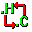
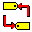

|
|
WWFileOpen | Performs a workspace-wide incremental file search. More... |
| WWFileGlobalOpen | Performs an incremental file search through the global include and source paths. More... | |
|

|
WWHeaderFlip | Opens the current file's "alternate" file. More... |
| WWFileFindPrev | In the case of a file title with multiple extensions, WWFileFindPrev and opens the previous matching file. | |
| WWFileFindNext | In the case of a file title with multiple extensions, WWFileFindNext opens the next matching file. | |
| WWHistoryBack | Moves backward through the file history. Similar to a web browser's Back button. More... | |
| WWHistoryForward | Moves forward through the file history. Similar to a web browser's Forward button. More... | |
|
|
WWHistoryDlg | Shows the history of all movements made within source files opened via Workspace Whiz commands. More... |
|
|
WWTagFindDlg | Performs a workspace-wide incremental tag search. More... |
| WWTagFindSpecialDlg | Using the standard Find Tag dialog, a list of functions in the current file is displayed. More... | |
| WWTagFindAtCursor | Tries to match the tag under the caret. If more than one tag is found, the standard Find Tag dialog is opened with all of the matches. This is subject to certain options in the Preferences - Tags dialog. More... | |
| WWTagFindAtCursorDlg | Tries to match the tag under the caret. The standard Find Tag dialog is opened with all of the matches. This is subject to certain options in the Preferences - Tags dialog. More... | |
|

|
WWTagFlip | The current location of the caret is matched against a tag, and its declaration or definition is moved to. More... |
| WWTagFindPrev | In the case of more than one tag match, WWTagFindPrev moves to the previous matching tag. | |
| WWTagFindNext | In the case of more than one tag match, WWTagFindNext moves to the next matching tag. | |
| WWTagCompletePrev | Autocompletes the partial tag under the caret using the tag previous to the current match. More... | |
| WWTagCompleteNext | Autocompletes the partial tag under the caret using the tag next to the current match. More... | |
| WWTagCompleteRestore | Restores a completed tag to the text originally typed. More... | |
| WWTagCompleteDlg | Shows a dialog of tags matching the partial tag for selection. More... | |
|
|
WWTemplateSelect | Shows a dialog of code templates for selection. More... |
| WWTemplateComplete | Runs the template matching the template key under the caret. More... |